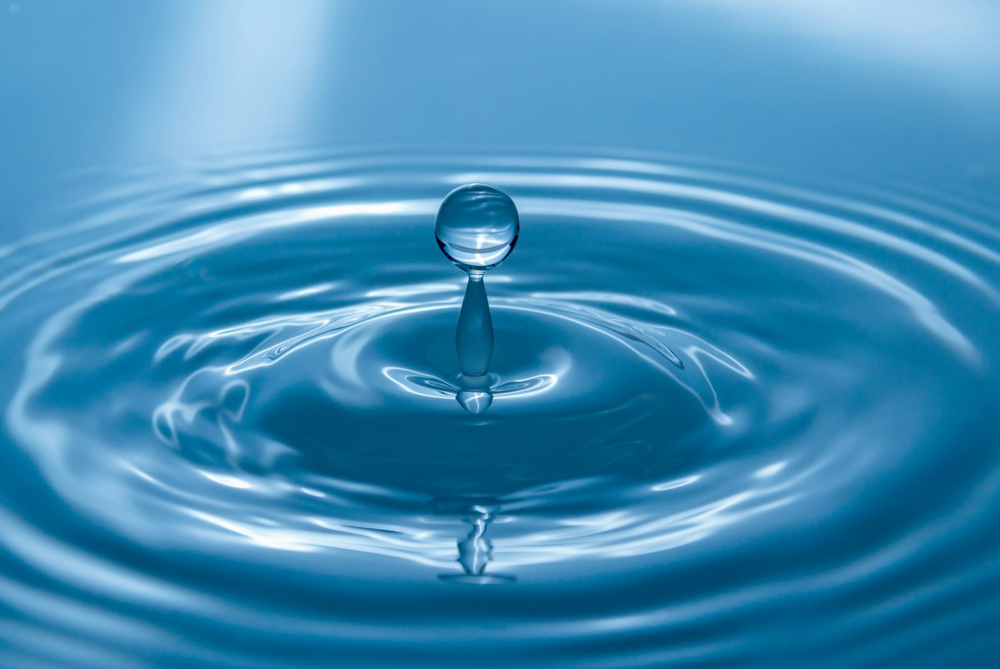
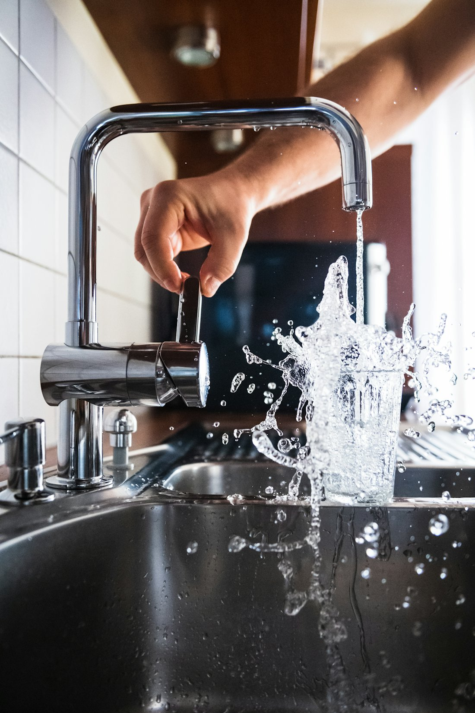
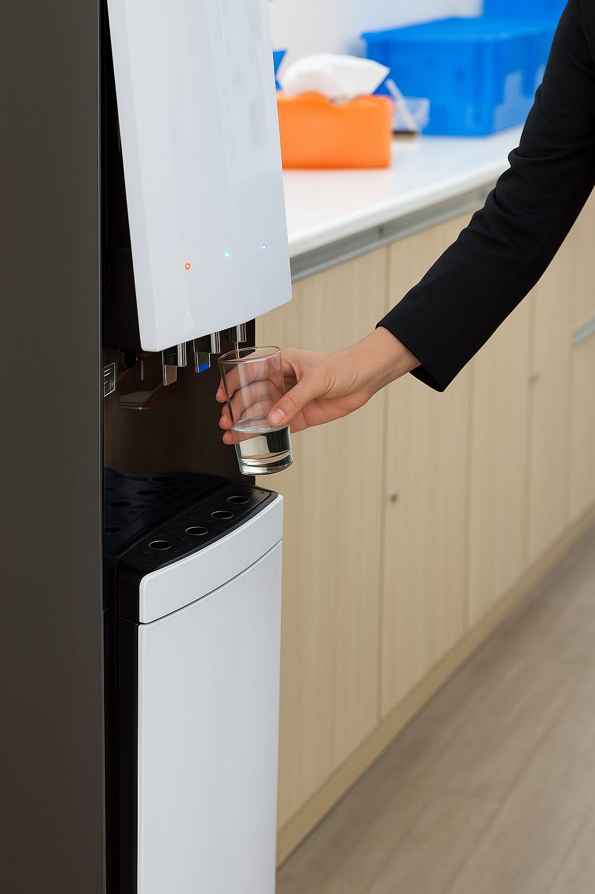

Une eau pure, directement du réseau.
Des fontaines Mistral raccordées au circuit d'eau, avec micro-filtration : fiables, durables et plus écologiques.
Fontaines Mistral
Nous avons choisi de collaborer avec Mistral Constructeur, une référence sur le marché des fontaines à eau, reconnue pour sa fiabilité, sa durabilité et la qualité de ses équipements.
Leur expertise et leur engagement en faveur de solutions performantes et innovantes nous permettent de garantir à nos clients un service irréprochable et durable.

Eau du réseauUn choix écologique
Contrairement aux fontaines à bonbonne traditionnelles, notre fontaine sur réseau puise directement l'eau du circuit.
- Moins de plastique
- Plus aucune livraison
- Une consommation plus responsable

Micro-filtrationKit de filtration directe
Notre kit filtre l'eau dès sa sortie. La micro-filtration avancée élimine efficacement bactéries et impuretés.
- Une eau claire et potable
- Parfaitement sûre à chaque utilisation
- Bactéries et impuretés éliminées
Bonbonne ou réseau : le match.
Fontaine à bonbonne
Le modèle traditionnel
- Bonbonnes en plastique à remplacer
- Livraisons régulières à organiser
- Stock de bonbonnes à entreposer
- Bonbonnes lourdes à manipuler
Fontaine Mistral sur réseau
La solution Kalliste Vending
- Eau puisée directement dans le circuit
- Aucune livraison
- Aucun stockage
- Micro-filtration intégrée